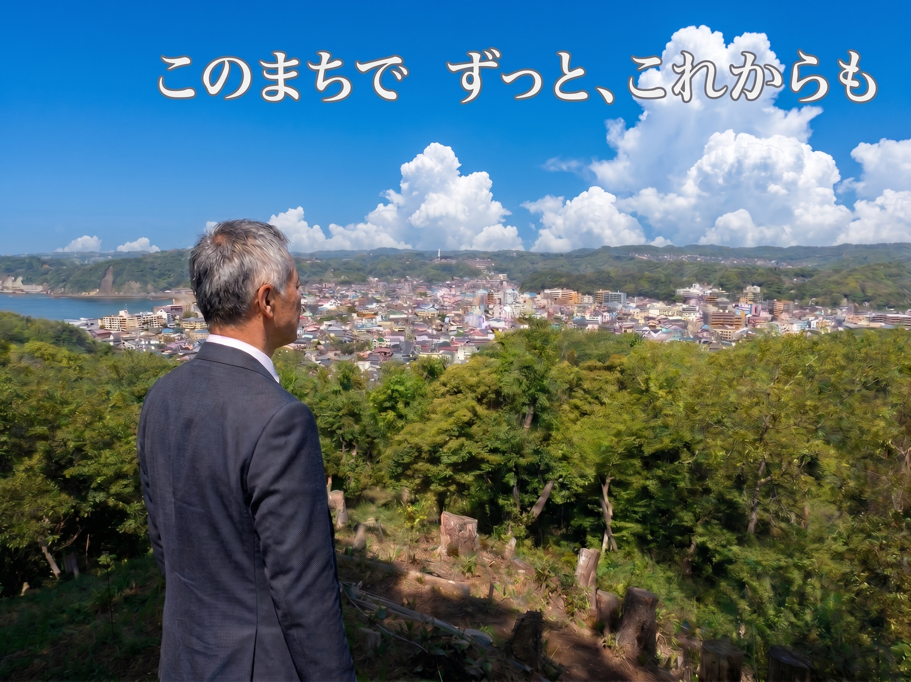
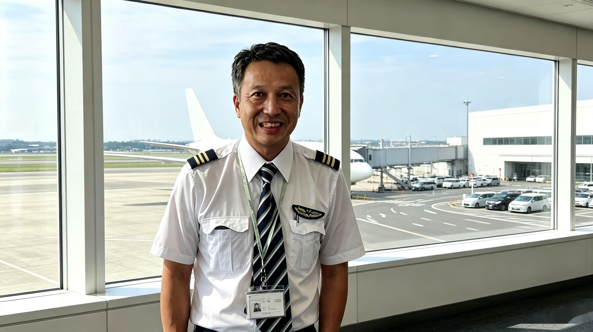
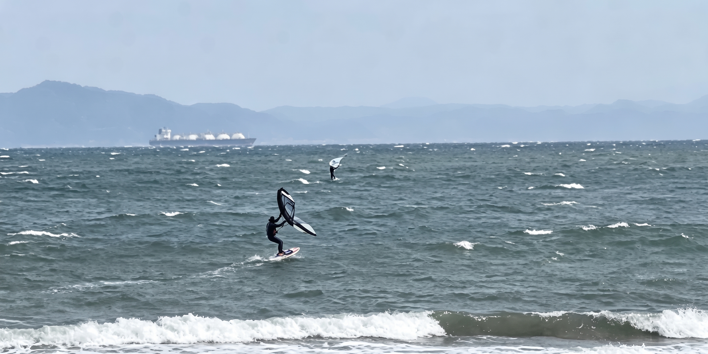

きょくた かずふみ

1980年に葉山へ移り住んで以来、この町で暮らしてきました。
逗子高校、成蹊大学法学部を経て航空大学校を卒業し、航空会社で30年以上勤務。これまでの
経験を、これからは葉山のために生かしたいと考えています。
海と山があり、富士山を望む景色がある。スポーツを楽しむ人がいて、地域を支えるお店や、 さまざまな経験を持つ人がいる。
私が大切にしたいのは、葉山にすでにある魅力と、人の力です。一人ひとりの声に耳を傾けながら、 この町で暮らす安心と、これからへの楽しみを育てていきたいと思っています。
長く暮らしてきた葉山は、私にとって、観光地である前に日々の生活の場所です。
海辺で過ごす時間や、体を動かす楽しさがある一方で、毎日の移動、学校や公共施設のこれから、 年齢を重ねた先の暮らしなど、身近なところにも考えるべきことがあります。
この町の良さを守ることと、暮らしの不便を見直すこと。そのどちらも大切にしたいと 考えています。
長く住んでいるからといって、町のことをすべて分かっているわけではありません。暮らす 地域や家族の形、仕事や年齢によって、見えている葉山は違うはずです。自分の経験だけで 決めつけず、皆さんから教えていただく姿勢を忘れずにいたいと思います。

逗子高校を卒業後、成蹊大学法学部に進学。2年次で中退し、航空大学校へ進みました。 卒業後は航空会社で30年以上勤務してきました。
航空の仕事と町政は、もちろん同じではありません。それでも、安全を大切にすること、 状況を確かめること、周囲と協力することは、町の課題に向き合うときにも大切にしたい 姿勢です。
何かを提案するときには、期待できる効果だけでなく、費用や負担、安全面にも目を向ける。 実施した後も、うまくいっているかを確かめ、必要であれば見直す。
移動、防災、公共施設など、暮らしを支える仕組みについても、そうした姿勢で考えていきたいと 思っています。

テニスをはじめ、ウイングフォイルやオープンウォーターなど、体を動かすことや海のスポーツに 関心があります。陸上競技のB級審判資格や、1級小型船舶操縦免許も取得しています。
私が考える葉山の地域活性化は、この「楽しむ」という気持ちから始まって います。
海でスポーツを楽しんだ後に、地元のお店で食事をする。山を歩き、富士山の写真を撮り、 町の中でお気に入りの場所を見つける。大会に参加する人だけでなく、一緒に来た家族や 応援する人にも、葉山での時間を楽しんでもらう。
さらに、京急などとの連携による移動のしやすさや、地域の商品・体験を生かしたふるさと 納税を組み合わせることで、一度きりの来訪では終わらない関係をつくりたいと考えています。
海、山、スポーツ、富士山の景色。それぞれの魅力を、地域のお店や人の仕事に つなげる。
自分が楽しみたいと思うことを出発点にしながら、住民の暮らしや自然環境への配慮を忘れず、 町全体に喜びが広がる形を探していきたいと思います。
私には、80歳になってもテニスで日本一を目指したい、という夢があります。
年齢を重ねても、目標があること。新しいことを学び、挑戦できること。そして、自分の経験が 誰かの役に立つこと。そんな機会を、葉山で暮らす多くの方と分かち合いたいと思っています。
第二種電気工事士の資格なども含め、これまでに身につけてきた知識や経験を、これからも 生かしていきたいと考えています。
一方で、元気に活動できるときだけでなく、支えが必要になったときの安心も欠かせません。 一人暮らしの方の将来への備え、終活の相談、大切な人やペットとの最期のお別れまで、 暮らしの延長として考えていきたいと思います。
今日を楽しめることと、明日を心配しすぎずに暮らせること。
その両方を大切にする町でありたいと考えています。
こうした思いは 「高齢者・福祉」の政策 にもつながっています。
「60にして立つ」は、これまでの経験を生かし、新たな一歩を踏み出す私の決意です。
自分の考えを伝えることと同じくらい、相手の話を聴くことを大切にしたいと思っています。 意見が違うときにも、すぐに否定するのではなく、「なぜそう考えるのか」「どんなことに 困っているのか」を知るところから始めたい。
大切にしている言葉の一つが「敬天愛人」です。人を大切にし、謙虚である こと。そして、「What is right? ― 何が正しいのか」を、自分自身に 問い続けることを忘れたくありません。
名前は、平和の「和」に、歴史の「史」で、和史です。
葉山で暮らしてきた一人の住民として、皆さんとともに学び、考え、行動していきます。
| 氏名 | 曲田 和史（きょくた かずふみ） |
|---|---|
| 葉山との関わり | 1980年から葉山町在住 |
| 学歴 | 逗子高校卒業／成蹊大学法学部2年次中退／航空大学校卒業 |
| 職歴 | 航空会社に30年以上勤務 |
| 資格 | 陸上競技B級審判資格／1級小型船舶操縦免許／第二種電気工事士 |
| 趣味・関心 | テニス、ウイングフォイル、オープンウォーターなど |
| これからの夢 | 80歳になっても、テニスで日本一を目指すこと |
| 大切にしている言葉 | 敬天愛人／What is right? |
| 新たな挑戦への言葉 | 60にして立つ |
曲田 和史 KAZUFUMI KYOKUTA